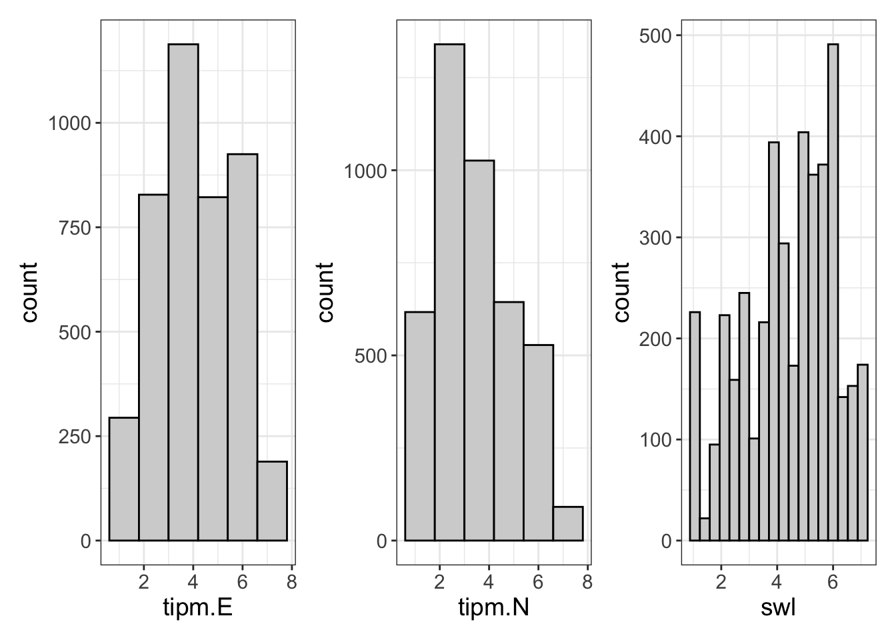

The present data analysis was based on the “PSYR6003.A4.sav” fictional data set created and published by Dr. Igor Yakovenko. This file contained 263 participants and measured personality and satisfaction with life. This data was obtained using a 7-point Likert scale (In which, 1 = “strongly disagree” and 7 = “strongly agree”), for up to 20 days. The data set contained self-report information on satisfaction with life, extraversion and neuroticism. Although other information was included in the data set, we excluded it for the purposes of the current analysis. Interested in the relationship between certain personality traits and satisfaction with life, we cloned the data set from Dr. Yakovenko’s repository to conduct an exploratory analysis.
#add here all the libraries we need for this assignmnt library(haven) #to load in sav fileslibrary(dplyr) #This package is used to transform data
Attaching package: 'dplyr'
The following objects are masked from 'package:stats':
filter, lag
The following objects are masked from 'package:base':
intersect, setdiff, setequal, union
library(tidyverse) #this package helps to keep data tidy
── Conflicts ────────────────────────────────────────── tidyverse_conflicts() ──
✖ dplyr::filter() masks stats::filter()
✖ dplyr::lag() masks stats::lag()
ℹ Use the conflicted package (<http://conflicted.r-lib.org/>) to force all conflicts to become errors
library(lme4) #this runs linear mixed models
Loading required package: Matrix
Attaching package: 'Matrix'
The following objects are masked from 'package:tidyr':
expand, pack, unpack
library(flexplot) #easy designing graphs
Attaching package: 'flexplot'
The following object is masked from 'package:ggplot2':
flip_data
library(Matrix) #needed in my computer to run lme4library(patchwork) #to combine objects
Data Initialization & Cleaning Procedure
We initialized the data set by loading it into the integrated environment RStudio (Version 2023.12.1.402) running on the software R (Version 4.2.3) in the background. We used the package “haven” (Wickham et al., 2019) to upload the file into the directory since it was contained within an “.sav” format. After loading, we put the data into an object so we could examine it.
Before starting the exploratory analysis, we visually inspected the raw data to familiarize ourselves with the data set and ensure we had no missing or extraneous values. To manage the data set, we used the package “tidyverse” (Wickham et al., 2019). The raw data file contained 4252 observations and 263 participants, in which we identified 6 rows containing missing values (NAs). We decided to omit these values, to ensure the accuracy of our results, which decreased our sample to 4246 observations and 262 participants.
Since the raw data set contained several variables that were irrelevant to our research question, we decided to remove them from our analysis. We used the package “dplyr” (Wickham et al., 2019) to select only the measures of 1) satisfaction with life, 2) extraversion, and 3) neuroticism.
Data <-read_sav("P6003.A4.sav") #this loads the package into our environmenthead(Data) #allows us to view the name of each of the rows.
data<-na.omit(Data) #let's get rid of any individuals with missing data#According to the assignment instructions we only need the variables "id", "day", "swl", "tipm.E" & "tipm.N". Therefore we decided to take all of the other variables from our working data set Extrav= data %>%select(-("tipm.A":"PRED_2"))# let's do the same for the neuroticism variablesNeuro = data %>%select(-("tipm.E":"tipm.C")) %>%select(-("tipm.O":"PRED_2"))# The next lines of code combines the twoExtraneuro = Extrav %>%mutate(tipm.N = Neuro$tipm.N)
Descriptive Statistics
To determine the average self-reports across the variables of interest we gathered summary statistics for the measures. We obtained mean and standard deviation values using the package “dplyr” (Wickham et al., 2019). Then, we used the package “apaTable” (Stanley, 2021) to report the descriptive statistics and bivariate correlation values.
We attained the mean (M) and standard deviation (SD) values for satisfaction with life (M= 4.43 SD= 1.61), extraversion (M= 4.18, SD= 1.52), and neuroticism (M= 3.49, SD= 1.54). According to these reports (Table 1), individuals on average reported moderate (4= “neither agree nor disagree/neutral”) contentment with life, while displaying a moderate level of extraversion and slight negative levels of neuroticism (3= “somewhat disagree”).
Additionally, the bivariate correlations reports (Table 1), revealed satisfaction with life to be positively correlated with extraversion (r (262) = .38, p <.01). These findings could be explained by the level of social interaction one may have; if an individual is extraverted, they may be more sociable and have a larger support system. Inversely, satisfaction with life was found to be negatively correlated with neuroticism (r (262) = -.45, p <.01). This suggests that those who experience higher neuroticism are likely to be more preoccupied with life, which in turn causes them to be less satisfied with it. Finally, we found a negative bivariate correlation between extraversion and neuroticism (r (262) = -.33, p <.01). This suggests that extraverted individuals experience lower levels of neuroticism, which is in line with what we would expect according to the available literature on the topic.
#this calculates the descriptives of the following: swl, tipm.E and tipm.N#We want to select only the variables that we are interested in,descriptives <-Extraneuro %>% dplyr::select(swl, tipm.E, tipm.N)library(apaTables) # we need this package to get our descriptives tabletable1 <-apa.cor.table(descriptives, table.number=1, filename="Table_1.doc") #This creates our table for M and SD of all variables and saves itprint(table1) #we can vizualize the data in here
Table 1
Means, standard deviations, and correlations with confidence intervals
Variable M SD 1 2
1. swl 4.43 1.61
2. tipm.E 4.18 1.52 .38**
[.35, .41]
3. tipm.N 3.49 1.54 -.45** -.33**
[-.47, -.43] [-.36, -.31]
Note. M and SD are used to represent mean and standard deviation, respectively.
Values in square brackets indicate the 95% confidence interval.
The confidence interval is a plausible range of population correlations
that could have caused the sample correlation (Cumming, 2014).
* indicates p < .05. ** indicates p < .01.
Hypothesis & Analysis Set-Up
Interested in the relationship between extraversion and neuroticism in predicting life satisfaction, we decided to create a model including the variables using the package “flexplot” (Fife, 2022). We hypothesized that 1) extraversion would be positively associated with satisfaction with life, 2) neuroticism would be negatively associated with satisfaction with life, and 3) the effects would be similar for level 1 and level 2 (within and between participants, respectively).
Univariate Distribution
To merge the univariate plots of the variables of interest we used the package “patchwork” (Pedersen, 2024). We began by visualizing the univariate plots of the variables of interest (satisfaction with life & extraversion), using the package “flexplot” (Fife, 2022). Extraversion (Figure 1) was revealed to be approximately normally distributed indicating a neutral pattern of response for this variable. Neuroticism, exhibited a right skewed arrangement, indicating negative levels of neuroticism. In contrast, the variable satisfaction with life, presented a left skewed pattern, indicating neutral to positive levels of life satisfaction.
Data Analysis Strategy
For the purposes of the current analysis, we chose to use a random effect, which was tested using a nested model comparison of our linear mixed effects model. We used maximum likelihood estimation (ML), to accommodate for the nested model comparisons that were built using the package “lme4” (Bates et al., 2015).
We started investigating our hypothesis by fitting a baseline model, which included our dependent variable “satisfaction with life” but no predictor variables, which can be represented by the following equation: baseline = lmer (SatisfactionWithLife~ 1+ (1|id), data.
We did this to determine if we needed to run a linear mixed model. We first obtained the intraclass correlation (ICC) and measures of effect size for our baseline model. The ICC value for the baseline model revealed that 74% of the variance in the data set was due to clustering, which indicates that we should run a mixed model. Similarly, the design effect shows us that by not using linear mixed models we would be increasing our sample size 12-fold, which then would increase our likelihood of committing a Type I error.
#Visualize univariate distributionsa<-flexplot(tipm.E~1, data = Extraneuro)#for extraversion b<-flexplot(tipm.N~1, data =Extraneuro) #for neuroticism c<-flexplot(swl~1, data =Extraneuro) #for satisfaction with lifea+b+c #this combines them into one image using patchwork

#Run a baseline linear mixed model for outcome with random intercept only using lme4 package without any predictorsbaseline <-lmer (swl ~1+ (1|id), data = Extraneuro)#gives us a summary of our baseline modelsummary(baseline)
Linear mixed model fit by REML ['lmerMod']
Formula: swl ~ 1 + (1 | id)
Data: Extraneuro
REML criterion at convergence: 11285.8
Scaled residuals:
Min 1Q Median 3Q Max
-5.5459 -0.4402 0.0450 0.4925 5.2625
Random effects:
Groups Name Variance Std.Dev.
id (Intercept) 1.9109 1.3824
Residual 0.6606 0.8128
Number of obs: 4246, groups: id, 262
Fixed effects:
Estimate Std. Error t value
(Intercept) 4.42818 0.08656 51.16
#Compute ICC using the flexplot packageicc(baseline)
$icc
[1] 0.7431173
$design.effect
[1] 12.29992
Model and Diagnostics
Using the package “flexplot” (Fife, 2022), we compared the fixed and random models. We found the random model to be supported based on its fit indices, such as significant p-value, higher Bayes factor and lower AIC and BIC.
We then fitted our model, in which the outcome variable is satisfaction with life, with extraversion and neuroticism acting as fixed and random effects, clustered by individual. This can be represented by the following equation: Model = lmer (SatisfactionWithLife ~ Extraversion + Neuroticism + (Extraversion + Neuroticism|ID), data.
#model testing#Create reduced model for our control variable, which would only include it as fixed.fixed_extraversion <-lmer (swl ~ tipm.E + (1|id), data =Extraneuro)summary(fixed_extraversion)
Linear mixed model fit by REML ['lmerMod']
Formula: swl ~ tipm.E + (1 | id)
Data: Extraneuro
REML criterion at convergence: 10928.7
Scaled residuals:
Min 1Q Median 3Q Max
-5.4414 -0.4541 0.0408 0.5056 5.6490
Random effects:
Groups Name Variance Std.Dev.
id (Intercept) 1.6638 1.29
Residual 0.6085 0.78
Number of obs: 4246, groups: id, 262
Fixed effects:
Estimate Std. Error t value
(Intercept) 3.47523 0.09445 36.80
tipm.E 0.22737 0.01166 19.51
Correlation of Fixed Effects:
(Intr)
tipm.E -0.517
#Random and fixed extraversion effect. Average effect of extraversion on satisfaction with life, changing across people.random_extraversion <-lmer (swl ~ tipm.E + (tipm.E|id), data = Extraneuro)summary(random_extraversion)
Linear mixed model fit by REML ['lmerMod']
Formula: swl ~ tipm.E + (tipm.E | id)
Data: Extraneuro
REML criterion at convergence: 10844.8
Scaled residuals:
Min 1Q Median 3Q Max
-5.3673 -0.4327 0.0357 0.4936 5.6476
Random effects:
Groups Name Variance Std.Dev. Corr
id (Intercept) 2.36298 1.5372
tipm.E 0.03098 0.1760 -0.55
Residual 0.57359 0.7574
Number of obs: 4246, groups: id, 262
Fixed effects:
Estimate Std. Error t value
(Intercept) 3.46002 0.11116 31.12
tipm.E 0.23030 0.01699 13.55
Correlation of Fixed Effects:
(Intr)
tipm.E -0.683
#Do a model comparisonmodel.comparison(fixed_extraversion,random_extraversion)
#Best fitting model + add the next variable to test (neuroticism)fixed_neuroticism <-lmer (swl ~ tipm.E + tipm.N + (tipm.E|id), data = Extraneuro)#model comparision model.comparison(random_extraversion, fixed_neuroticism)
Table 2
Regression results using swl as the criterion
Predictor b b_95%_CI sr2 sr2_95%_CI Fit
(Intercept) 4.62** [4.43, 4.80]
tipm.E 0.27** [0.24, 0.30] .06 [.05, .07]
tipm.N -0.38** [-0.41, -0.35] .12 [.10, .14]
tipm.N + tipm.E | idTRUE NA [NA, NA] NA [NA, NA]
R2 = .263**
95% CI[.24,.28]
Note. A significant b-weight indicates the semi-partial correlation is also significant.
b represents unstandardized regression weights.
sr2 represents the semi-partial correlation squared.
Square brackets are used to enclose the lower and upper limits of a confidence interval.
* indicates p < .05. ** indicates p < .01.
#let's vizualize our table in the consoleprint(table2)
We visualized our model (Figure 3), which indicated that a normally distributed data set, complying with the assumption of normality. When checking for the assumption of linearity, our plot seemed to comply with this. Finally, the model was also compliant with the assumption of homoskedasticity.
We used the package “flexplot” (Fife, 2022) to obtain estimates of the model. According to our model, the estimated values tell us that the variance of individuals’ satisfaction with life is 2.03. This accounts for ~79% of the variance that is explained between reporting of extraversion that is left after accounting for our fixed effects.
The model, as pictured in Table 2 which we obtained using the package “apaTable”, explains roughly 26% (CI [.24,.28]) of the variance in satisfaction with life, considering a 95% confidence interval. This suggests that both extraversion and neuroticism have a large effect in predicting life satisfaction. Semi-partial r2 values indicate that neuroticism is responsible for contributing the most to the variance in life satisfaction (r2 = 0.12, CI [.10, .14]), when in comparison to extraversion (r2 = 0.16, CI [.05, .07]).
The data also revealed a significant b-weight for both extraversion (b = 0.27 CI [0.24, .30]) and neuroticism (b = - 0.38 CI [-0.41, -0.35]), considering a 95% confidence interval. The results indicate extraversion to be significantly positively associated with satisfaction with life. Meanwhile, the inverse pattern is seen for neuroticism. According to our coefficients, we can determine that for every one-unit increase in extraversion, satisfaction with life increases by 0.16. In a mirroring pattern, with every one-unit increase in neuroticism, life satisfaction decreases by -0.21. As described by the previously stated evidence, we can determine, that extraversion is positively associated with satisfaction with life, while neuroticism is negatively associated with it, confirming the previously stated hypothesis 1 & 2.
Residual R2 reports revealed that the model successfully explained 26% of the variance in satisfaction with life within individuals (level 1). Conversely, our model did not meaningfully explain the variability of life satisfaction between individuals (level 2). Therefore, in our model, effects for level 1 were significant, and those for level 2 were not. In line with this, we reject the hypothesis that the effects between level 1 and level 2 will be similar.
Overall, we can conclude that extraversion, positively impacts satisfaction with life, while neuroticism negatively impacts it, and that these effects are meaningful within individuals, but not between them.
#Visualize the model visualize(random_neuroticism, plot ="model")
Linear mixed model fit by REML ['lmerMod']
Formula: swl ~ tipm.E + tipm.N + (tipm.N + tipm.E | id)
Data: Extraneuro
REML criterion at convergence: 10335.9
Scaled residuals:
Min 1Q Median 3Q Max
-6.0770 -0.4525 0.0361 0.4915 5.6038
Random effects:
Groups Name Variance Std.Dev. Corr
id (Intercept) 2.02508 1.4231
tipm.N 0.03510 0.1874 -0.32
tipm.E 0.01985 0.1409 -0.41 -0.05
Residual 0.48842 0.6989
Number of obs: 4246, groups: id, 262
Fixed effects:
Estimate Std. Error t value
(Intercept) 4.50471 0.11824 38.10
tipm.E 0.16128 0.01530 10.54
tipm.N -0.21027 0.01708 -12.31
Correlation of Fixed Effects:
(Intr) tipm.E
tipm.E -0.620
tipm.N -0.518 0.130
optimizer (nloptwrap) convergence code: 0 (OK)
Model failed to converge with max|grad| = 0.00567679 (tol = 0.002, component 1)
#Get key estimatesestimates(random_neuroticism)
refitting model(s) with ML (instead of REML)
Fixed Effects:
(Intercept) tipm.E tipm.N
4.5047051 0.1612831 -0.2102705
Random Effects:
Groups Name Std.Dev. Corr
id (Intercept) 1.42305
tipm.N 0.18735 -0.325
tipm.E 0.14090 -0.405 -0.054
Residual 0.69887
ICC and Design Effect:
icc design.effect
0.7431173 12.2999212
R Squared:
(Intercept) Residual
-0.05974614 0.26061215
References:
Bates D, Mächler M, Bolker B, Walker S (2015). “Fitting Linear Mixed-Effects Models Using lme4.”Journal of Statistical Software, 67(1), 1–48. doi:10.18637/jss.v067.i01.
Fife, D. (2022). Flexplot: Graphically-based data analysis. Psychological Methods, 27(4), 477–496. https://doi.org/10.1037/met0000424
Pedersen T (2024). patchwork: The Composer of Plots. R package version 1.2.0.9000, https://github.com/thomasp85/patchwork, https://patchwork.data-imaginist.com.
Stanley D (2021). _apaTables: Create American Psychological Association (APA) Style Tables_. R package version 2.0.8, <https://CRAN.R-project.org/package=apaTables>.
Wickham, H., Averick, M., Bryan, J., Chang, W., McGowan, L. D., François, R., Grolemund, G., Hayes, A., Henry, L., Hester, J., Kuhn, M., Pedersen, T. L., Miller, E., Bache, S. M., Müller, K., Ooms, J., Robinson, D., Seidel, D. P., Spinu, V., Takahashi, K., Vaughan, D., Wilke, C., Woo, K., & Yutani, H. (2019). Welcome to the tidyverse. Journal of Open Source Software, 4(43), 1686. https://doi.org/10.21105/joss.01686